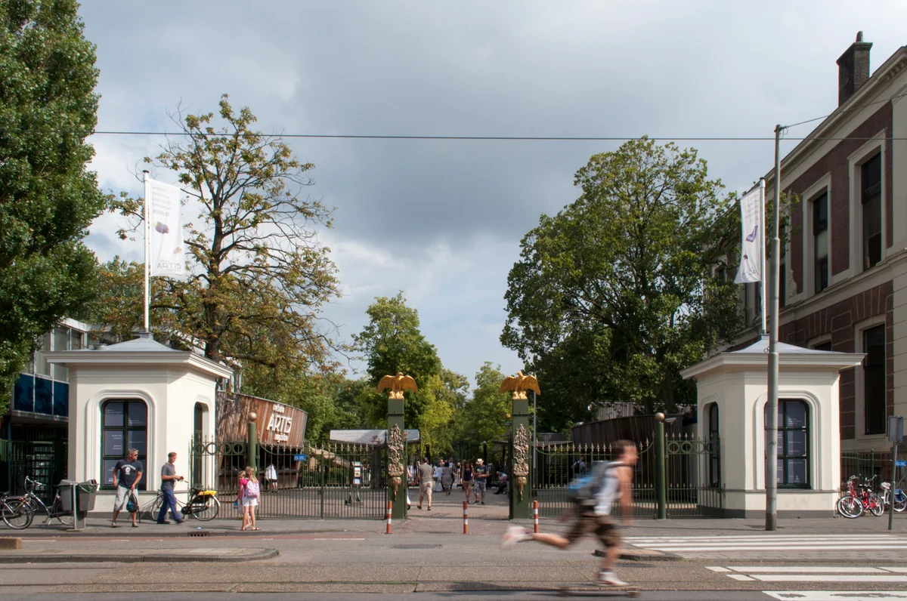
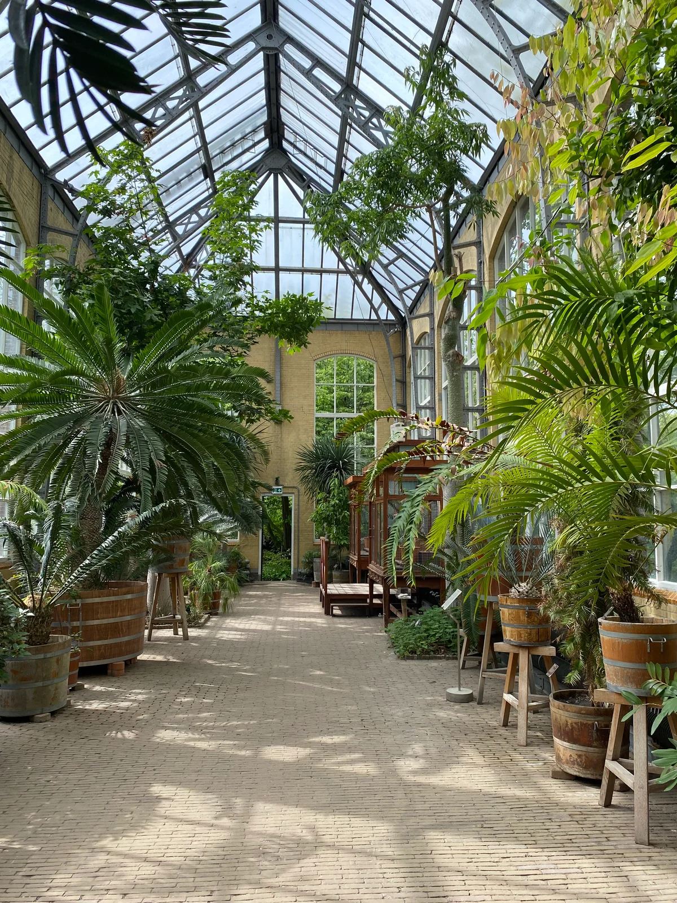
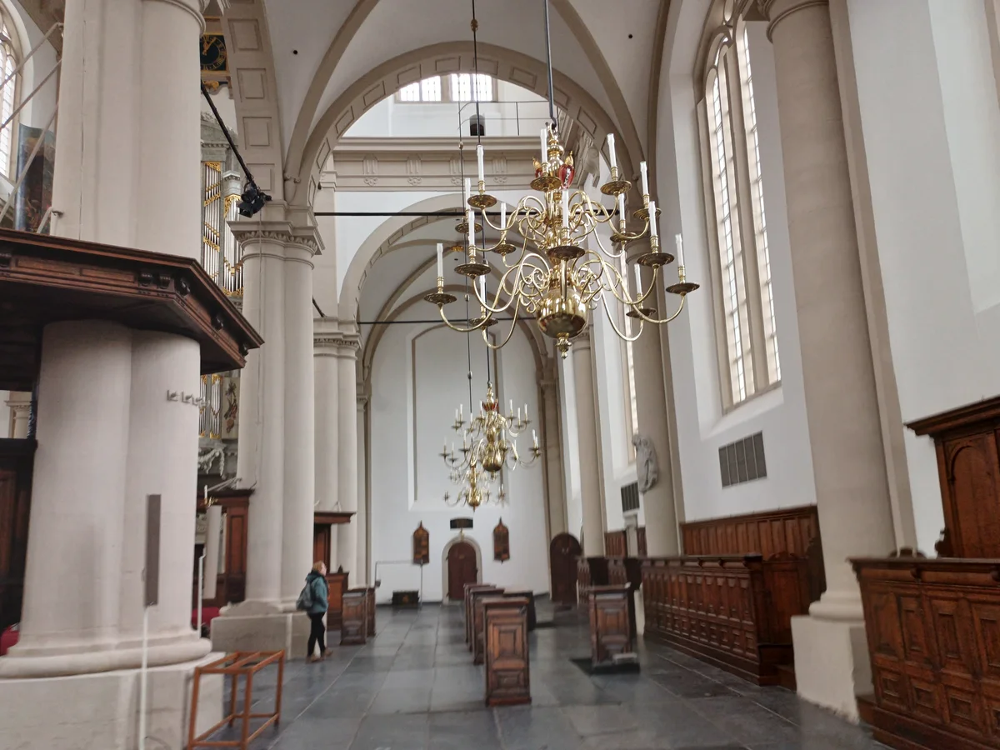
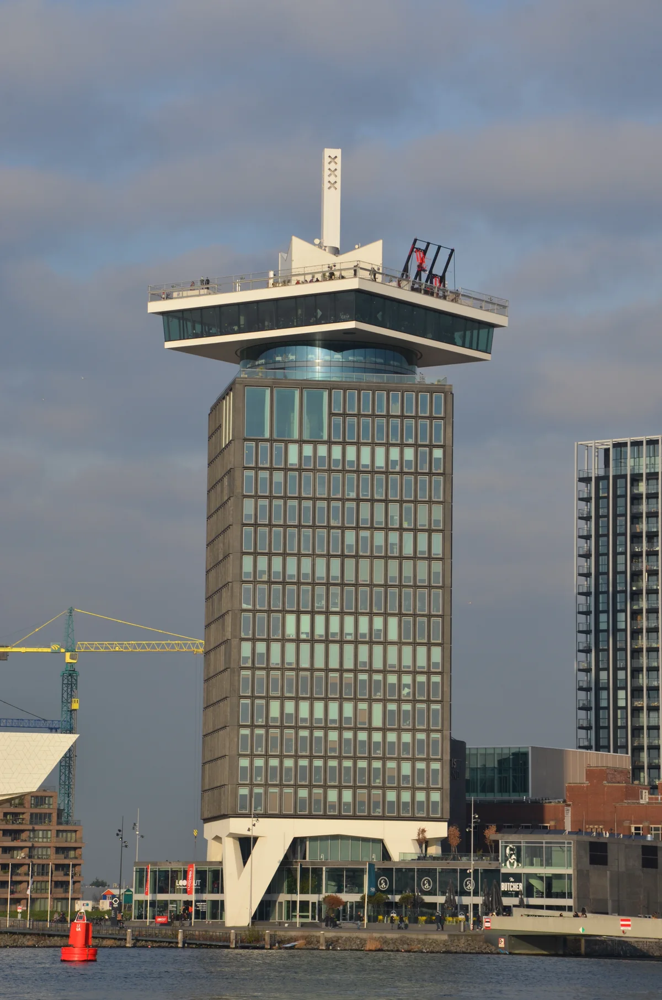
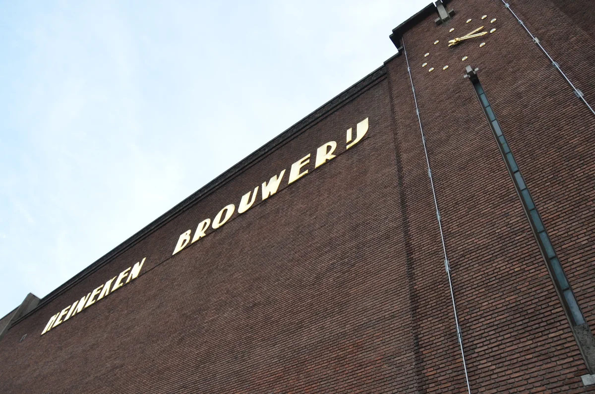
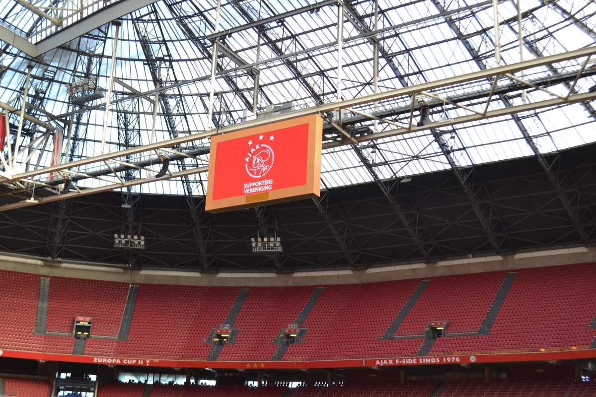
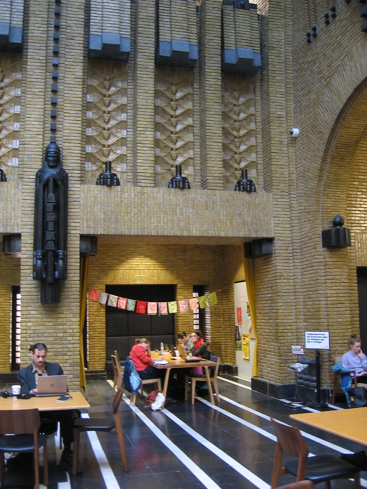
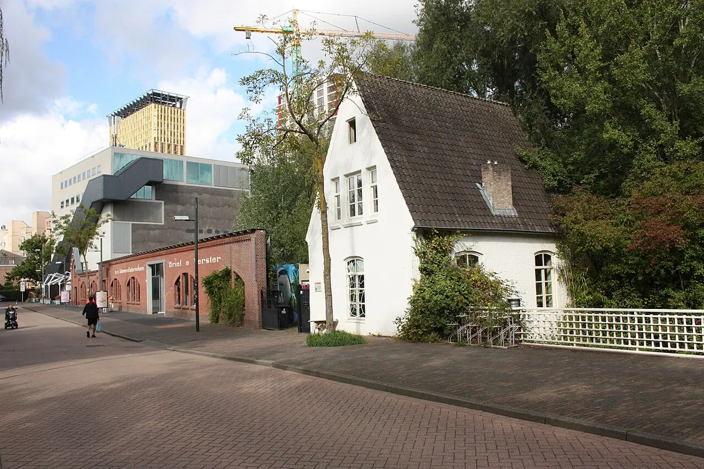
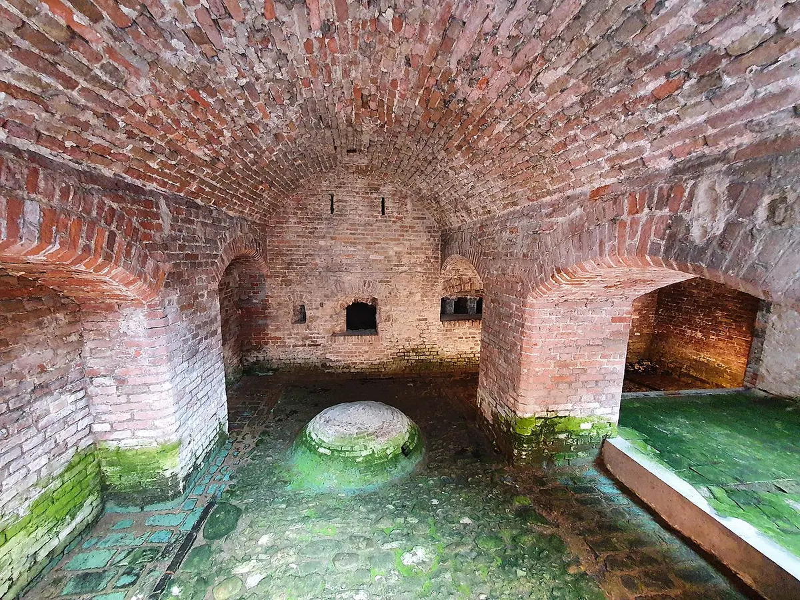

YouNew — следующий пакет на одобрение
REVIEW · 16 ноября 2026 · публикация не разрешена
Продолжение Draft PR №75 от 63024764d029a1c26f3a71405a96ef44baba0bb0. 10 прежних амстердамских карточек получили фото и редакционные уточнения; ещё 10 существующих карточек четырёх городов получили по два новых блока EN/NL. Это не 20 новых объектов в production.
Решения по ограничениям
- Nieuwe Kerk: области применимости конфликтующих расписаний не подтверждены. Числовые часы убраны из карточки. Сохранены официальные ссылки; варианты расписания находятся только в редакционном реестре.
- OBA Oosterdok: официальный сайт открыт 16.11.2026 в обычном видимом Chrome, HTTP 200; часы, адрес и доступность прочитаны непосредственно. Старый поисковый снимок оставлен в истории, не выдан за эту проверку.
- Westbroekpark: новые абзацы об истории и ландшафте используют сохранённую официальную страницу от 15.11.2026. Свежие запросы получили 403; обход не выполнялся и дата не обновлена.
Пять прежних фото сохранены отдельно
Открыть неизменённый пакет пяти фотографий. Все 32 файла побайтно сохранены: Rembrandtpark — архив 1986, Kazerne — прежняя вывеска Benz, Supernova — временный декор 2022 и естественные 1024 px; City Hotel Rembrandt — архив, ibis — условный главный снимок с датой.
Четыре прежних пропуска: Kaafi, Koffie Leute, The Collector, The Nox. Четыре отдельные замены главных фото: Rembrandtpark, City Hotel Rembrandt, Kazerne, Supernova. Имеющиеся причины и источники сохранены без повторных скачиваний. Запросы правообладателям не отправлены.
Лицензия разрешает коммерческое использование фотографии при соблюдении указанных условий. Для CC BY/CC BY-SA нужны автор, ссылка на источник и лицензию, указание изменений; ShareAlike сохраняется. CC не означает поддержку YouNew объектом съёмки, наличие model release или передачу прав на товарные знаки. Снимки датированы и не доказывают состояние объекта сегодня.
Амстердам — фото и точечные исправления
Записи: 8c1f4ca957a9ecfd7464d56db0ab8b05ca7a597ee37a0a865af1356c37977d8f. Манифест · Реестр источников · Права и происхождение фото.
ARTIS
place.artis · amsterdam · REVIEW

dated_hero_candidate
Zxempire · Artis Toegang1.jpg · 2012-08-16 16:24:12 · Dated photograph / Gedateerde foto · proportional resize to WebP; no content edits
Страница автора и источника · CC BY-SA 3.0 nl
SHA-256 WebP: df3f8aa41738e7762d6e4fae2f09f1dfbfe9c1e221a5bbb720637fe1c461b56c
EN
Visit ARTIS Zoo in the Plantage neighbourhood, with animal habitats, an aquarium and a planetarium.
About this place
The zoo ticket includes the aquarium and planetarium; Micropia and the Groote Museum have separate admission.
www.artis.nl · 2026-11-16
Location
Plantage Kerklaan 38–40, Amsterdam. The map marks the registered address at number 38.
www.artis.nl · 2026-11-16
PDOK / Kadaster · 2026-11-16
Seasonal hours
November–February: daily 09:00–17:00. March–October: 09:00–18:00; check exceptions before travelling.
www.artis.nl · 2026-11-16
Tickets checked 16 November 2026
For ages 13+, online tickets start at €29.50; the counter price is €32.50. Online prices vary by date.
www.artis.nl · 2026-11-16
Before you go
ARTIS is cashless. Choose the zoo ticket rather than a ticket for only one of the other museums.
www.artis.nl · 2026-11-16
www.artis.nl · 2026-11-16
NL
Bezoek ARTIS-Park in de Plantagebuurt, met dierenverblijven, een aquarium en een planetarium.
Over deze plek
Het parkticket omvat het aquarium en planetarium; voor Micropia en het Groote Museum geldt aparte toegang.
www.artis.nl · 2026-11-16
Locatie
Plantage Kerklaan 38–40, Amsterdam. De kaart toont het geregistreerde adres op nummer 38.
www.artis.nl · 2026-11-16
PDOK / Kadaster · 2026-11-16
Seizoensuren
November–februari: dagelijks 09:00–17:00. Maart–oktober: 09:00–18:00; controleer uitzonderingen vóór vertrek.
www.artis.nl · 2026-11-16
Tickets gecontroleerd op 16 november 2026
Vanaf 13 jaar kosten onlinetickets vanaf €29,50; aan de kassa €32,50. Onlineprijzen verschillen per bezoekdatum.
www.artis.nl · 2026-11-16
Voor vertrek
ARTIS accepteert geen contant geld. Kies een parkticket, niet een ticket voor uitsluitend een van de andere musea.
www.artis.nl · 2026-11-16
www.artis.nl · 2026-11-16
Координаты и тематические связи
{'latitude': 52.3669615, 'longitude': 4.9125816} — BAG address point, not a surveyed entrance. Существующее официальное доказательство.
city.amsterdam
Hortus Botanicus Amsterdam
place.hortus-botanicus-amsterdam · amsterdam · REVIEW

dated_hero_candidate
Faust002 · The interior of small Greenhouse in Hortus Botanicus of Amsterdam.jpg · 2024-04-30 16:23:23 · Dated photograph / Gedateerde foto · proportional resize to WebP; no content edits
Страница автора и источника · CC0
SHA-256 WebP: ddab295de852ab09f6712a532caf0e2259c6d7f117d2c386257e7bed33342807
EN
Explore living plant collections in the Hortus garden and greenhouses in central Amsterdam.
Garden and greenhouses
The botanical garden combines outdoor planting with greenhouses, including the Climate House.
www.dehortus.nl · 2026-11-16
Location
Plantage Middenlaan 2A, Amsterdam. The map uses the BAG address point, not a surveyed entrance.
www.dehortus.nl · 2026-11-16
PDOK / Kadaster · 2026-11-16
Opening hours
Daily 10:00–17:00; closed 25 December and 1 January. The Palm House is partly closed for renovation.
www.dehortus.nl · 2026-11-16
Tickets checked 16 November 2026
Adults €14.75; students with a student card €8.50. Card payment only; the Museumkaart is not valid.
www.dehortus.nl · 2026-11-16
Access and luggage
Some paths are narrow or gravelled and older greenhouses have thresholds. There is no luggage storage.
www.dehortus.nl · 2026-11-16
www.dehortus.nl · 2026-11-16
NL
Ontdek levende plantencollecties in de tuin en kassen van de Hortus in hartje Amsterdam.
Tuin en kassen
De botanische tuin combineert beplanting buiten met kassen, waaronder het Klimatenhuis.
www.dehortus.nl · 2026-11-16
Locatie
Plantage Middenlaan 2A, Amsterdam. De kaart gebruikt het BAG-adrespunt, geen ingemeten ingang.
www.dehortus.nl · 2026-11-16
PDOK / Kadaster · 2026-11-16
Openingstijden
Dagelijks 10:00–17:00; gesloten op 25 december en 1 januari. Het Palmenhuis is gedeeltelijk dicht vanwege renovatie.
www.dehortus.nl · 2026-11-16
Tickets gecontroleerd op 16 november 2026
Volwassenen €14,75; studenten met studentenkaart €8,50. Alleen kaartbetaling; de Museumkaart is niet geldig.
www.dehortus.nl · 2026-11-16
Toegankelijkheid en bagage
Sommige paden zijn smal of met grind bedekt en oudere kassen hebben drempels. Bagageopslag is niet beschikbaar.
www.dehortus.nl · 2026-11-16
www.dehortus.nl · 2026-11-16
Координаты и тематические связи
{'latitude': 52.3670055, 'longitude': 4.9078974} — BAG address point, not a surveyed entrance. Существующее официальное доказательство.
city.amsterdam
Oude Kerk
place.oude-kerk · amsterdam · REVIEW
 dated_hero_candidate
dated_hero_candidate
Suicasmo · Exterior views of the Oude Kerk (Amsterdam) 20180701.jpg · 2018-07-01 17:06:14 · Dated photograph / Gedateerde foto · proportional resize to WebP; no content edits
Страница автора и источника · CC BY-SA 4.0
SHA-256 WebP: a09a088f5204e2b910aff3115236ca00d6057ceff3994ebc3446001275d79cfc
EN
Visit the Oude Kerk for its historic interior and changing programme of contemporary art and music.
What to expect
A historic church with exhibitions and music; check the programme for the work on view during your visit.
www.oudekerk.nl · 2026-11-16
Location
Oudekerksplein 23, Amsterdam. Use the official visitor page for arrival information.
www.oudekerk.nl · 2026-11-16
Opening hours
Monday–Saturday 10:00–18:00; Sunday 13:00–17:30. Exhibition changes can cause additional closures.
www.oudekerk.nl · 2026-11-16
Tickets checked 16 November 2026
The official FAQ lists adult admission at €13.50 and students at €7. Confirm your ticket type at checkout.
www.oudekerk.nl · 2026-11-16
Tower and access
Tower visits are seasonal, April–October; do not expect a November climb. Some historic side rooms are not wheelchair-accessible.
www.oudekerk.nl · 2026-11-16
NL
Bezoek de Oude Kerk voor het historische interieur en een wisselend programma met hedendaagse kunst en muziek.
Wat je kunt verwachten
Een historische kerk met tentoonstellingen en muziek; bekijk het programma voor het aanbod tijdens je bezoek.
www.oudekerk.nl · 2026-11-16
Locatie
Oudekerksplein 23, Amsterdam. Bekijk de officiële bezoekerspagina voor informatie over je aankomst.
www.oudekerk.nl · 2026-11-16
Openingstijden
Maandag–zaterdag 10:00–18:00; zondag 13:00–17:30. Bij tentoonstellingswissels kan de kerk extra gesloten zijn.
www.oudekerk.nl · 2026-11-16
Tickets gecontroleerd op 16 november 2026
De officiële FAQ vermeldt €13,50 voor volwassenen en €7 voor studenten. Controleer je ticketsoort bij het boeken.
www.oudekerk.nl · 2026-11-16
Toren en toegankelijkheid
Torenbezoek is seizoensgebonden, april–oktober; reken niet op een beklimming in november. Sommige historische zijruimten zijn niet rolstoeltoegankelijk.
www.oudekerk.nl · 2026-11-16
Координаты и тематические связи
{'latitude': 52.3741183, 'longitude': 4.8977613} — BAG address point, not a surveyed entrance. Существующее официальное доказательство.
city.amsterdam
De Nieuwe Kerk Amsterdam
place.de-nieuwe-kerk-amsterdam · amsterdam · REVIEW
 archive_gallery_only
archive_gallery_only
Suicasmo · Nieuwe Kerk (Amsterdam) 20180701.jpg · 2018-07-01 11:21:38 · Archive gallery only / Alleen archiefgalerij · proportional resize to WebP; no content edits
Страница автора и источника · CC BY-SA 4.0
SHA-256 WebP: 0966aa4b6de577495a65dae2410d792896fea89f93f047764d808a76f2119dc7
Только архивная галерея. Для главной фотографии нужна замена; техническое превью не является одобрением такого размещения.
EN
Discover exhibitions inside De Nieuwe Kerk, the historic church beside Dam Square.
Confirm hours before travelling
The official visit page and FAQ give different hours without explaining which period each covers. Use the official schedule and confirm your visit date before travelling.
www.nieuwekerk.nl · 2026-11-16
www.nieuwekerk.nl · 2026-11-16
Tickets checked 16 November 2026
The visit page lists adult admission at €20 and ages 12–17 at €13.50; children through age 11 enter free.
www.nieuwekerk.nl · 2026-11-16
Booking
Use the official visit page to select a ticket. Check the exhibition dates and closures as well as the price.
www.nieuwekerk.nl · 2026-11-16
NL
Ontdek tentoonstellingen in De Nieuwe Kerk, de historische kerk aan de Dam.
Controleer de tijden vóór vertrek
De officiële bezoekpagina en FAQ noemen andere tijden zonder aan te geven voor welke periode die gelden. Bekijk het officiële schema en bevestig je bezoekdatum vóór vertrek.
www.nieuwekerk.nl · 2026-11-16
www.nieuwekerk.nl · 2026-11-16
Tickets gecontroleerd op 16 november 2026
De bezoekpagina vermeldt €20 voor volwassenen en €13,50 voor 12–17 jaar; kinderen tot en met 11 jaar hebben gratis toegang.
www.nieuwekerk.nl · 2026-11-16
Boeken
Kies een ticket via de officiële bezoekpagina. Controleer naast de prijs ook tentoonstellingsdata en sluitingsdagen.
www.nieuwekerk.nl · 2026-11-16
Координаты и тематические связи
{'latitude': 52.3736714, 'longitude': 4.8918777} — BAG address point, not a surveyed entrance. Существующее официальное доказательство.
city.amsterdam
Westerkerk
place.westerkerk · amsterdam · REVIEW

dated_hero_candidate
Quahadi · Interior of Westerkerk (Amsterdam) 114314.jpg · 2024-02-28 11:43:14 · Dated photograph / Gedateerde foto · proportional resize to WebP; no content edits
Страница автора и источника · CC BY-SA 4.0
SHA-256 WebP: 91611188f1b6d3130658dd6607576055dfbb9ddc85a26efb5b36c8c7d6897b87
EN
Step inside the Westerkerk for its church interior and organs; the tower is currently unavailable to climb.
About the church
The church was designed by Hendrick de Keyser and built in 1620–1631.
westerkerk.nl · 2026-11-16
Visitor entrance
Use Prinsengracht 279, Amsterdam, for the visitor entrance; the church’s contact address is number 281.
westerkerk.nl · 2026-11-16
Visiting hours
Normally Monday–Friday 11:00–15:00. Check the church website for holidays and other exceptions.
westerkerk.nl · 2026-11-16
Admission
Entry is free; donations are welcome. Guided visits must be arranged with the church.
westerkerk.nl · 2026-11-16
Tower and accessibility
The visitor entrance is wheelchair-accessible. The tower cannot currently be climbed because of restoration works.
westerkerk.nl · 2026-11-16
NL
Bekijk het kerkinterieur en de orgels van de Westerkerk; de toren is momenteel niet te beklimmen.
Over de kerk
De kerk is ontworpen door Hendrick de Keyser en gebouwd in 1620–1631.
westerkerk.nl · 2026-11-16
Bezoekersingang
Gebruik Prinsengracht 279, Amsterdam, als bezoekersingang; het contactadres van de kerk is nummer 281.
westerkerk.nl · 2026-11-16
Bezoekuren
In de regel maandag–vrijdag 11:00–15:00. Controleer de kerkwebsite voor feestdagen en andere uitzonderingen.
westerkerk.nl · 2026-11-16
Toegang
Toegang is gratis; donaties zijn welkom. Rondleidingen moeten met de kerk worden afgesproken.
westerkerk.nl · 2026-11-16
Toren en toegankelijkheid
De bezoekersingang is rolstoeltoegankelijk. De toren is momenteel niet te beklimmen vanwege restauratiewerkzaamheden.
westerkerk.nl · 2026-11-16
Координаты и тематические связи
{'latitude': 52.3745258, 'longitude': 4.8834977} — BAG address point, not a surveyed entrance. Существующее официальное доказательство.
city.amsterdam
A'DAM LOOKOUT
place.adam-lookout · amsterdam · REVIEW

dated_hero_candidate
Steven Lek · Adam Tower Amsterdam 2019.jpg · 2019-01-21 14:58:49 · Dated photograph / Gedateerde foto · proportional resize to WebP; no content edits
Страница автора и источника · CC BY-SA 4.0
SHA-256 WebP: c32064d3230141a272814ec3f9453d150bea89456f102e0e798fa9a584e6282d
EN
Look across Amsterdam from the indoor and outdoor observation decks of A’DAM LOOKOUT.
View over the IJ
The observation decks are in the A’DAM Tower. The swing and VR ride are separate extras.
www.adamlookout.com · 2026-11-16
Arrival
IJpromenade 4, Amsterdam. The entrance faces the waterfront opposite EYE; ferry F3 goes to Buiksloterweg.
www.adamlookout.com · 2026-11-16
Opening hours
Monday–Thursday 11:00–19:00; Friday–Sunday 11:00–21:00. Last entry is one hour before closing.
www.adamlookout.com · 2026-11-16
Tickets checked 16 November 2026
Adult admission costs €16.50 online or €18.50 at the ticket office. Swing and VR are not included.
www.adamlookout.com · 2026-11-16
Restrictions
Both the swing and VR ride require a minimum height of 1.20 metres. Dogs are not admitted, except assistance dogs.
www.adamlookout.com · 2026-11-16
www.adamlookout.com · 2026-11-16
NL
Kijk uit over Amsterdam vanaf de binnen- en buitendekken van A’DAM LOOKOUT.
Uitzicht over het IJ
De uitkijkdekken bevinden zich in de A’DAM Toren. De schommel en VR-rit zijn aparte extra’s.
www.adamlookout.com · 2026-11-16
Aankomst
IJpromenade 4, Amsterdam. De ingang ligt aan het water tegenover EYE; pont F3 vaart naar Buiksloterweg.
www.adamlookout.com · 2026-11-16
Openingstijden
Maandag–donderdag 11:00–19:00; vrijdag–zondag 11:00–21:00. Laatste toegang is een uur vóór sluiting.
www.adamlookout.com · 2026-11-16
Tickets gecontroleerd op 16 november 2026
Toegang voor volwassenen kost online €16,50 of €18,50 aan de kassa. Schommel en VR zijn niet inbegrepen.
www.adamlookout.com · 2026-11-16
Beperkingen
Voor zowel de schommel als de VR-rit geldt een minimumlengte van 1,20 meter. Alleen assistentiehonden zijn toegestaan.
www.adamlookout.com · 2026-11-16
www.adamlookout.com · 2026-11-16
Координаты и тематические связи
{'latitude': 52.3838662, 'longitude': 4.9022162} — BAG address point, not a surveyed entrance. Существующее официальное доказательство.
city.amsterdam
Heineken Experience
place.heineken-experience · amsterdam · REVIEW

dated_hero_candidate
Steven Lek · Heineken Experience Amsterdam 2018 1.jpg · 2018-12-18 15:22:19 · Dated photograph / Gedateerde foto · proportional resize to WebP; no content edits
Страница автора и источника · CC BY-SA 4.0
SHA-256 WebP: 3b58659d15d1116e3d699bb072a9912091d568e8481427da6a4718990de466f4
EN
Explore the former Heineken brewery through a self-guided brand and brewing-history experience for adults.
The standard tour
The self-guided Heineken Tour explores the former brewery and brewing process; the operator suggests around 1.5 hours.
www.heinekenexperience.com · 2026-11-16
Location
Stadhouderskade 78, Amsterdam. Check the official arrival information before travelling.
www.heinekenexperience.com · 2026-11-16
Opening hours
Monday–Thursday and Sunday 10:30–19:30, last entry 17:15; Friday–Saturday until 21:00, last entry 18:45. Holiday hours differ.
www.heinekenexperience.com · 2026-11-16
Tickets checked 16 November 2026
The standard tour is listed at €24.95 with one beer included. Rooftop and VIP products have different prices.
www.heinekenexperience.com · 2026-11-16
Age and accessibility
Entry is for visitors aged 18 and over. Wheelchair access covers only part of the experience; discuss your requirements before booking.
www.heinekenexperience.com · 2026-11-16
NL
Ontdek de voormalige Heinekenbrouwerij via een zelfstandige merk- en brouwgeschiedeniservaring voor volwassenen.
De standaardtour
De zelfstandige Heineken Tour behandelt de voormalige brouwerij en het brouwproces; de aanbieder rekent op ongeveer 1,5 uur.
www.heinekenexperience.com · 2026-11-16
Locatie
Stadhouderskade 78, Amsterdam. Bekijk vóór vertrek de officiële informatie over bereikbaarheid.
www.heinekenexperience.com · 2026-11-16
Openingstijden
Maandag–donderdag en zondag 10:30–19:30, laatste toegang 17:15; vrijdag–zaterdag tot 21:00, laatste toegang 18:45. Feestdagen wijken af.
www.heinekenexperience.com · 2026-11-16
Tickets gecontroleerd op 16 november 2026
De standaardtour staat vermeld voor €24,95, inclusief één bier. Rooftop- en VIP-producten hebben andere prijzen.
www.heinekenexperience.com · 2026-11-16
Leeftijd en toegankelijkheid
Toegang is voor bezoekers vanaf 18 jaar. Slechts een deel is rolstoeltoegankelijk; bespreek je behoeften vóór het boeken.
www.heinekenexperience.com · 2026-11-16
Координаты и тематические связи
{'latitude': 52.3578694, 'longitude': 4.8914963} — BAG address point, not a surveyed entrance. Существующее официальное доказательство.
city.amsterdam
Johan Cruijff ArenA
place.johan-cruijff-arena · amsterdam · REVIEW

dated_hero_candidate
Daniel from Glasgow, United Kingdom · Johan Cruijff ArenA Tour (40365193963).jpg · 2019-03-09 16:51 · Dated photograph / Gedateerde foto · proportional resize to WebP; no content edits
Страница автора и источника · CC BY 2.0
SHA-256 WebP: 9b91db00f521bb2f05fcaae1b6cf84b55ff9cdcbb626aa4f4627d48f61e5e0a5
EN
Take a stadium tour behind the scenes at Ajax’s home, subject to the event schedule.
Dates and times
Check the official booking calendar for your date; tours may be unavailable during events or when sold out.
www.johancruijffarena.nl · 2026-11-16
Prices and payment
Prices depend on the tour selected and are shown in the official shop. The stadium is cashless.
www.johancruijffarena.nl · 2026-11-16
Bags and access needs
Bags larger than A4 and pushchairs are not allowed. Wheelchair users should contact the tour team to arrange assistance.
www.johancruijffarena.nl · 2026-11-16
NL
Neem een kijkje achter de schermen in het thuisstadion van Ajax, afhankelijk van de evenementenkalender.
Data en tijden
Bekijk de officiële boekingskalender voor je datum; bij evenementen of uitverkochte tijdsloten zijn tours mogelijk niet beschikbaar.
www.johancruijffarena.nl · 2026-11-16
Prijzen en betalen
Prijzen hangen af van de gekozen tour en staan in de officiële shop. Het stadion accepteert geen contant geld.
www.johancruijffarena.nl · 2026-11-16
Tassen en toegankelijkheid
Tassen groter dan A4 en kinderwagens zijn niet toegestaan. Rolstoelgebruikers moeten contact opnemen met het tourteam om begeleiding te regelen.
www.johancruijffarena.nl · 2026-11-16
Координаты и тематические связи
{'latitude': 52.3137549, 'longitude': 4.9405294} — BAG address point, not a surveyed entrance. Существующее официальное доказательство.
city.amsterdam
De Hallen Amsterdam
place.de-hallen-amsterdam · amsterdam · REVIEW
 dated_hero_candidate
dated_hero_candidate
SophieWikiAms · De Hallen Amsterdam 2024 Entree Tollensstraat.jpg · 2024-01-27 · Dated photograph / Gedateerde foto · proportional resize to WebP; no content edits
Страница автора и источника · CC0
SHA-256 WebP: 339b0078b02849dfaa5e4e75380d6e2e1cc51b6855fec5216a565f1aa3c49698
EN
Explore independent food, film and cultural venues connected by De Passage at De Hallen Amsterdam.
Several venues in one building
De Hallen brings together independent businesses and cultural initiatives; each has its own programme and contact point.
www.dehallen-amsterdam.nl · 2026-11-16
Location
Hannie Dankbaarpassage 47, Amsterdam. De Passage connects the venues; check the specific venue before making a reservation.
www.dehallen-amsterdam.nl · 2026-11-16
Passage opening hours
De Passage opens daily 07:00–01:00. These are not the opening hours of every shop, restaurant or cinema.
www.dehallen-amsterdam.nl · 2026-11-16
Arriving by bicycle
Use the bicycle parking; bikes must not be left in De Passage or against the building’s facades.
www.dehallen-amsterdam.nl · 2026-11-16
NL
Ontdek zelfstandige eet-, film- en cultuurplekken rond De Passage in De Hallen Amsterdam.
Meerdere locaties in één gebouw
De Hallen verenigt zelfstandige ondernemingen en culturele initiatieven; elk heeft een eigen programma en contactpunt.
www.dehallen-amsterdam.nl · 2026-11-16
Locatie
Hannie Dankbaarpassage 47, Amsterdam. De Passage verbindt de locaties; controleer de betreffende locatie vóór een reservering.
www.dehallen-amsterdam.nl · 2026-11-16
Openingstijden van de passage
De Passage is dagelijks open van 07:00–01:00. Dit zijn niet de openingstijden van elke winkel, horecazaak of bioscoop.
www.dehallen-amsterdam.nl · 2026-11-16
Activiteiten en reserveringen
In de passage vinden vrij toegankelijke activiteiten plaats. Tickets, maaltijden en reserveringen lopen afzonderlijk via de betreffende aanbieder.
www.dehallen-amsterdam.nl · 2026-11-16
www.dehallen-amsterdam.nl · 2026-11-16
Met de fiets
Gebruik de fietsenstalling; fietsen mogen niet in De Passage of tegen de gevels worden geplaatst.
www.dehallen-amsterdam.nl · 2026-11-16
Координаты и тематические связи
{'latitude': 52.3663947, 'longitude': 4.8680156} — BAG address point, not a surveyed entrance. Существующее официальное доказательство.
city.amsterdam
OBA Oosterdok
place.oba-oosterdok · amsterdam · REVIEW
 dated_hero_candidate
dated_hero_candidate
EstherWikipedian · Amsterdam Public Library (OBA).jpg · 2023-08-15 · Dated photograph / Gedateerde foto · proportional resize to WebP; no content edits
Страница автора и источника · CC BY-SA 4.0
SHA-256 WebP: 3848c3197e2a2dacecd1ec2f7340579ce3d535c4a3b8513404d2043aa12caf32
EN
Browse books, read or explore the cultural programme at OBA Oosterdok.
Library and cultural venue
The location page describes books, magazines, exhibitions and spaces for reading, studying or working.
oba.nl · 2026-11-16
Location
Oosterdokskade 143, Amsterdam. The map uses the registered BAG address point.
oba.nl · 2026-11-16
PDOK / Kadaster · 2026-11-16
Plan your visit
Monday–Friday 08:00–22:00; Saturday–Sunday 10:00–20:00, checked on the official branch page on 16 November 2026. Check temporary and holiday changes before travelling.
oba.nl · 2026-11-16
Families and programmes
The library lists a children’s department and a theatre. Check individual activities for age limits, booking and any charge.
oba.nl · 2026-11-16
Study and work
Study and work spaces are listed; this does not guarantee an available seat when you arrive.
oba.nl · 2026-11-16
Accessibility
The branch lists wheelchair access, an accessible toilet and a lift or stairlift. Ask OBA about any specific access requirements.
oba.nl · 2026-11-16
NL
Blader door boeken, lees of ontdek het culturele programma van OBA Oosterdok.
Bibliotheek en cultuurplek
De locatiepagina beschrijft boeken, tijdschriften, tentoonstellingen en plekken om te lezen, studeren of werken.
oba.nl · 2026-11-16
Locatie
Oosterdokskade 143, Amsterdam. De kaart gebruikt het geregistreerde BAG-adrespunt.
oba.nl · 2026-11-16
PDOK / Kadaster · 2026-11-16
Plan je bezoek
Maandag–vrijdag 08:00–22:00; zaterdag–zondag 10:00–20:00, op 16 november 2026 gecontroleerd op de officiële vestigingspagina. Controleer tijdelijke wijzigingen en feestdagen vóór vertrek.
oba.nl · 2026-11-16
Gezinnen en programma’s
De bibliotheek vermeldt een jeugdafdeling en een theater. Controleer per activiteit de leeftijdsgrens, reservering en eventuele kosten.
oba.nl · 2026-11-16
Studeren en werken
Er zijn studie- en werkplekken vermeld; dit garandeert geen beschikbare plek bij aankomst.
oba.nl · 2026-11-16
Toegankelijkheid
De vestiging vermeldt rolstoeltoegang, aangepast sanitair en een lift of traplift. Vraag OBA naar voorzieningen die je specifiek nodig hebt.
oba.nl · 2026-11-16
Координаты и тематические связи
{'latitude': 52.3758244, 'longitude': 4.9083748} — BAG address point, not a surveyed entrance. Существующее официальное доказательство.
city.amsterdam
Rotterdam, Den Haag, Utrecht, Eindhoven — новые детали
Записи: ae8f1969a6bfacae346d521ec968729048a4de6fef48d4e50c4865447fc09ed7. Манифест · Реестр источников · Права и происхождение фото.
Bibliotheek Neude
place.utrecht-neude · utrecht · REVIEW
Новые два блока в каждой языковой версии отмечены полосой. Прежние пять блоков и фото сохранены.

existing_approved_photo_unchanged
Hansmuller · 2023-10-24 11:10:47 · Archive photograph / Archieffoto · resized WebP; no content edits
Страница автора и источника · CC BY-SA 4.0
SHA-256 WebP: 6ddd789d1e0ec9378cfe74030e2b027c5265572f8968c802e493786161bb67cd
EN
Explore Utrecht’s former post office as a working public library, with a monumental hall, reading spaces and a cultural programme.
About this place
The library offers tours of the former post office and displays contemporary art alongside its collections.
www.bibliotheekutrecht.nl · 2026-11-15
Opening hours
Monday–Saturday 09:00–21:00; Sunday 10:00–18:00. Check the branch page for exceptions.
www.bibliotheekutrecht.nl · 2026-11-15
Facilities
Reading and study spaces, Wi-Fi, computers and printing facilities are listed. Separate services or activities may have their own conditions.
www.bibliotheekutrecht.nl · 2026-11-15
Accessibility
The branch lists wheelchair access, an accessible toilet and a lift. Contact the library about specific access needs.
www.bibliotheekutrecht.nl · 2026-11-15
Arrival
The address is Neude 11. The official directions page describes access by public transport and bicycle.
www.bibliotheekutrecht.nl · 2026-11-15
Reserve a study place
Members aged 12 and over can reserve a work or study place free of charge; non-members can try it once for free. Booking is for today or tomorrow, in blocks of up to three hours, with at most two consecutive blocks. Check availability before relying on a reserved desk.
www.bibliotheekutrecht.nl · 2026-11-16
Choose the right workspace
The shared Stadsstudiehuis is for quiet work, without calls or meetings. A study cabin at Neude accommodates two people and is the option for conversation. Scan the desk QR code on arrival; a reservation lapses after a 15-minute delay.
www.bibliotheekutrecht.nl · 2026-11-16
NL
Ontdek het voormalige Utrechtse postkantoor als actieve openbare bibliotheek, met een monumentale hal, leesplekken en een cultureel programma.
Over deze plek
De bibliotheek organiseert rondleidingen door het voormalige postkantoor en toont hedendaagse kunst naast de collectie.
www.bibliotheekutrecht.nl · 2026-11-15
Openingstijden
Maandag–zaterdag 09.00–21.00 uur; zondag 10.00–18.00 uur. Bekijk de vestigingspagina voor uitzonderingen.
www.bibliotheekutrecht.nl · 2026-11-15
Voorzieningen
Er zijn lees- en studieplekken, wifi, computers en printvoorzieningen. Afzonderlijke diensten of activiteiten kunnen eigen voorwaarden hebben.
www.bibliotheekutrecht.nl · 2026-11-15
Toegankelijkheid
De vestiging vermeldt rolstoeltoegang, aangepast sanitair en een lift. Bespreek specifieke toegankelijkheidsvragen met de bibliotheek.
www.bibliotheekutrecht.nl · 2026-11-15
Aankomst
Het adres is Neude 11. De officiële routepagina beschrijft de bereikbaarheid met openbaar vervoer en fiets.
www.bibliotheekutrecht.nl · 2026-11-15
Reserveer een studieplek
Leden vanaf 12 jaar kunnen gratis een werk- of studieplek reserveren; niet-leden mogen het één keer gratis proberen. Je boekt voor vandaag of morgen, in blokken van maximaal drie uur en hoogstens twee blokken achter elkaar. Controleer de beschikbaarheid voordat je op een gereserveerde plek rekent.
www.bibliotheekutrecht.nl · 2026-11-16
Kies de juiste werkplek
Het gedeelde Stadsstudiehuis is bedoeld voor rustig werken, zonder bellen of overleggen. Een studiecabine bij Neude biedt plaats aan twee personen en is de optie voor overleg. Scan bij aankomst de QR-code van de werkplek; na 15 minuten vertraging vervalt de reservering.
www.bibliotheekutrecht.nl · 2026-11-16
Координаты и тематические связи
{'latitude': 52.0931279, 'longitude': 5.1181787} — BAG address point, not a surveyed entrance. Существующее официальное доказательство.
museum.utrecht-sonnenborgh, cafe.utrecht-koffie-leute, nature.utrecht-oog-in-al
Utrecht heritage buildings and public landscapes
Chabot Museum
museum.rotterdam-chabot · rotterdam · REVIEW
Новые два блока в каждой языковой версии отмечены полосой. Прежние пять блоков и фото сохранены.
 existing_approved_photo_unchanged
existing_approved_photo_unchanged
Szilas · 2009-02-15 12:02:02 · Archive photograph / Archieffoto · resized WebP; no content edits
Страница автора и источника · CC BY-SA 4.0
SHA-256 WebP: 43e0b0b75f634d6931fe8badd804bcfe76b40adbe091af6347124a1bac4f400c
EN
A museum in a white modernist villa beside Rotterdam’s Museumpark. Plan around its changing exhibitions and compact historic building.
About this place
The museum occupies a villa at Museumpark 11. Consult the current exhibition programme before visiting.
chabotmuseum.nl · 2026-11-15
Opening hours
Tuesday–Saturday 11:00–17:00; Sunday 12:00–17:00. Closed on Mondays and public holidays.
chabotmuseum.nl · 2026-11-15
Tickets and prices
Adults: €12; students/CJP: €6; under 18: free. Consult the official page for pass and combination-ticket conditions.
chabotmuseum.nl · 2026-11-15
Accessibility
There are steps at the entrance and a small lift. Ask the museum whether it suits your mobility needs.
chabotmuseum.nl · 2026-11-15
Check before travelling
Large bags go in the cloakroom; pushchairs are not allowed in the exhibition rooms. Purchased tickets cannot be exchanged or refunded.
chabotmuseum.nl · 2026-11-15
Look at the building as well as the art
The white villa was designed in 1938 by G.W. Baas, with completion entrusted to L. Stokla. Originally a private home, its bright rooms and views towards the garden and Museumpark are part of the museum experience.
chabotmuseum.nl · 2026-11-16
The collection has a separate depot route
In 2025 the Chabot collection moved to Depot Boijmans Van Beuningen. The museum links to bookable depot tours from its collection page. A visit to the villa is therefore not a promise that the entire collection is on display there; check the separate tour arrangements.
chabotmuseum.nl · 2026-11-16
NL
Een museum in een witte modernistische villa aan het Rotterdamse Museumpark. Houd rekening met wisselende tentoonstellingen en het compacte historische gebouw.
Over deze plek
Het museum is gevestigd in een villa aan Museumpark 11. Bekijk vóór je bezoek het actuele tentoonstellingsprogramma.
chabotmuseum.nl · 2026-11-15
Openingstijden
Dinsdag–zaterdag 11.00–17.00 uur; zondag 12.00–17.00 uur. Gesloten op maandag en feestdagen.
chabotmuseum.nl · 2026-11-15
Tickets en prijzen
Volwassenen: €12; studenten/CJP: €6; jonger dan 18: gratis. Bekijk de officiële pas- en combinaticketvoorwaarden.
chabotmuseum.nl · 2026-11-15
Toegankelijkheid
Bij de ingang zijn treden en er is een kleine lift. Vraag het museum of deze bij jouw mobiliteitsbehoeften past.
chabotmuseum.nl · 2026-11-15
Controleer voor vertrek
Grote tassen moeten in de garderobe; kinderwagens mogen niet in de tentoonstellingsruimten. Gekochte tickets worden niet omgeruild of terugbetaald.
chabotmuseum.nl · 2026-11-15
Bekijk ook de architectuur
De witte villa is in 1938 ontworpen door G.W. Baas; L. Stokla verzorgde de voltooiing. Het voormalige woonhuis heeft lichte vertrekken en zicht op de tuin en het Museumpark. Ook die architectuur maakt deel uit van het museumbezoek.
chabotmuseum.nl · 2026-11-16
Een aparte route naar de collectie
In 2025 verhuisde de Chabot-collectie naar Depot Boijmans Van Beuningen. Via de collectiepagina verwijst het museum naar te boeken depotrondleidingen. Een bezoek aan de villa betekent dus niet dat de hele collectie daar te zien is; bekijk de aparte rondleidingsvoorwaarden.
chabotmuseum.nl · 2026-11-16
Координаты и тематические связи
{'latitude': 51.9146896, 'longitude': 4.4723822} — BAG address point, not a surveyed entrance. Существующее официальное доказательство.
hotel.rotterdam-supernova, nature.rotterdam-trompenburg
Rotterdam architecture, a local stay and garden collections
Fotomuseum Den Haag
museum.den-haag-fotomuseum · den-haag · REVIEW
Новые два блока в каждой языковой версии отмечены полосой. Прежние пять блоков и фото сохранены.
 existing_approved_photo_unchanged
existing_approved_photo_unchanged
G.Lanting · 2017-09-20 03:19:01 · Archive photograph / Archieffoto · resized WebP; no content edits
Страница автора и источника · CC BY 4.0
SHA-256 WebP: e6f9e8b9eeee6bf814789a1bff66b133874cf2a342ab9e9f2faf2544ee2070d8
EN
A photography museum at Stadhouderslaan with changing exhibitions. Check the current exhibition surcharge as well as the standard admission price.
About this place
Choose your visit from the current photography programme; exhibition dates and admission conditions are linked on the museum website.
www.fotomuseumdenhaag.nl · 2026-11-15
Opening hours
Tuesday–Sunday 11:00–17:00; normally closed Monday. Holiday exceptions are listed separately.
www.fotomuseumdenhaag.nl · 2026-11-15
Tickets and prices
Standard adult admission is €16, plus a €2.50 surcharge for Eva Besnyö through 31 January 2027: €18.50 in total for this category.
www.fotomuseumdenhaag.nl · 2026-11-15
Tickets
Discount and pass categories have different surcharges. Select your own category; free base admission does not always waive the exhibition surcharge.
www.fotomuseumdenhaag.nl · 2026-11-15
Arrival
Use Stadhouderslaan 43 for the museum. Check current transport information rather than relying on dated roadworks notices.
www.fotomuseumdenhaag.nl · 2026-11-15
Eva Besnyö: a dated exhibition programme
The Liberated Camera runs until 31 January 2027. Around 200 photographs trace Eva Besnyö’s work from Budapest and Berlin to Amsterdam. Look for the unusual viewpoints and diagonal compositions associated with New Photography. This description applies to that exhibition, not to a permanent display.
www.fotomuseumdenhaag.nl · 2026-11-16
A contemporary response alongside the photographs
Mirthe Berentsen’s Beyond the Nuclear Family accompanies the retrospective and connects to the Dolle Mina journey photographed by Besnyö in 1972. Workshops have their own sign-up route on the exhibition page; admission alone does not confirm a workshop place.
www.fotomuseumdenhaag.nl · 2026-11-16
NL
Een fotografiemuseum aan de Stadhouderslaan met wisselende tentoonstellingen. Controleer naast de basisentree ook de actuele tentoonstellingstoeslag.
Over deze plek
Kies je bezoek aan de hand van het actuele fotografieprogramma; de museumsite verwijst naar tentoonstellingsdata en toegangsvoorwaarden.
www.fotomuseumdenhaag.nl · 2026-11-15
Openingstijden
Dinsdag–zondag 11.00–17.00 uur; normaal gesloten op maandag. Feestdaguitzonderingen worden apart vermeld.
www.fotomuseumdenhaag.nl · 2026-11-15
Tickets en prijzen
De gewone volwassenentree is €16, met tot en met 31 januari 2027 €2,50 toeslag voor Eva Besnyö: voor deze categorie totaal €18,50.
www.fotomuseumdenhaag.nl · 2026-11-15
Tickets
Kortings- en pashouderscategorieën hebben verschillende toeslagen. Kies je eigen categorie; gratis basisentree betekent niet altijd vrijstelling van de tentoonstellingstoeslag.
www.fotomuseumdenhaag.nl · 2026-11-15
Aankomst
Gebruik Stadhouderslaan 43 voor het museum. Raadpleeg actuele vervoersinformatie in plaats van gedateerde berichten over wegwerkzaamheden.
www.fotomuseumdenhaag.nl · 2026-11-15
Eva Besnyö: een tijdelijk programma
De bevrijde camera loopt tot en met 31 januari 2027. Ongeveer 200 foto’s volgen Eva Besnyö van Boedapest en Berlijn naar Amsterdam. Let op de ongewone standpunten en diagonale composities van de Nieuwe Fotografie. Deze beschrijving hoort bij die tentoonstelling, niet bij een vaste opstelling.
www.fotomuseumdenhaag.nl · 2026-11-16
Een hedendaags project naast de foto’s
Mirthe Berentsens Beyond the Nuclear Family sluit aan bij het retrospectief en bij de Dolle Mina-tocht die Besnyö in 1972 fotografeerde. Workshops hebben een eigen aanmeldroute op de tentoonstellingspagina; een toegangsbewijs bevestigt niet automatisch een workshopplek.
www.fotomuseumdenhaag.nl · 2026-11-16
Координаты и тематические связи
{'latitude': 52.0901313, 'longitude': 4.2794094} — Official tourism location map point, not a surveyed entrance. Существующее официальное доказательство.
nature.den-haag-westbroekpark, cafe.den-haag-kaafi
The Hague: photography and a separate outdoor stop
Inkijkmuseum
museum.eindhoven-inkijkmuseum · eindhoven · REVIEW
Новые два блока в каждой языковой версии отмечены полосой. Прежние пять блоков и фото сохранены.

existing_approved_photo_unchanged
Sneeuwvlakte · 2026-09-18 11:25:21 · Archive photograph / Archieffoto · resized WebP; no content edits
Страница автора и источника · CC BY-SA 4.0
SHA-256 WebP: 009e88809d4e7864b6f46a23245fc15739b5c7892a0691059080d0631c9e4a26
EN
A tiny museum beside the Dommel that invites you to look through its windows. Window viewing and organised visits are different experiences.
About this place
The small building presents art through its windows; it is a distinctive stop near Eindhoven’s centre.
www.thisiseindhoven.com · 2026-11-15
Opening hours
The tourism office describes window viewing as available 24 hours a day. This does not mean the interior is always open.
www.thisiseindhoven.com · 2026-11-15
Plan your visit
For an organised visit or activity, follow the museum link on the official tourism page and check the arrangements.
www.thisiseindhoven.com · 2026-11-15
Location
Find the museum at Dommelstraat 2A, beside the river. The map point is for orientation, not a surveyed accessible entrance.
www.thisiseindhoven.com · 2026-11-15
Before you go
Expect a small-scale stop. Check current activities before making a special journey for an indoor visit.
www.thisiseindhoven.com · 2026-11-15
A small venue with several roles
The Inkijkmuseum occupies the old Spoelhuis beside the Dommel. Its own programme combines exhibitions, music, performance and artist residencies. The building also has residential and accommodation functions, so looking through the windows should not be confused with unrestricted access inside.
www.inkijkmuseum.nl · 2026-11-16
Check the programme before an event visit
The operator describes a developing “global village” around the museum and directs visitors to its website for current activities. Check the specific announcement for entry conditions and timing. There is no verified general indoor timetable in this source.
www.inkijkmuseum.nl · 2026-11-16
NL
Een klein museum aan de Dommel waar je door de ramen naar binnen kijkt. Kijken vanaf buiten en een georganiseerd bezoek zijn verschillende ervaringen.
Over deze plek
Het kleine gebouw toont kunst door de ramen; een bijzondere halte bij het centrum van Eindhoven.
www.thisiseindhoven.com · 2026-11-15
Openingstijden
Het toeristenbureau beschrijft kijken door de ramen als 24 uur per dag mogelijk. Dat betekent niet dat het interieur altijd open is.
www.thisiseindhoven.com · 2026-11-15
Plan je bezoek
Volg voor een georganiseerd bezoek of activiteit de museumlink op de officiële toerismepagina en controleer de afspraken.
www.thisiseindhoven.com · 2026-11-15
Locatie
Het museum ligt aan Dommelstraat 2A, naast de rivier. De kaartmarkering is voor oriëntatie, niet voor een ingemeten toegankelijke ingang.
www.thisiseindhoven.com · 2026-11-15
Voor vertrek
Verwacht een kleinschalige halte. Controleer actuele activiteiten voordat je speciaal voor een binnenbezoek reist.
www.thisiseindhoven.com · 2026-11-15
Een kleine plek met meerdere functies
Het Inkijkmuseum zit in het oude Spoelhuis aan de Dommel. Het eigen programma combineert exposities, muziek, kleinkunst en artist-in-residenceprojecten. Het pand heeft ook woon- en verblijfsfuncties: door de ramen kijken betekent daarom niet dat je overal binnen mag lopen.
www.inkijkmuseum.nl · 2026-11-16
Controleer het programma voor een evenement
De beheerder beschrijft een groeiend “globaal dorp” rond het museum en verwijst voor actuele activiteiten naar de eigen website. Controleer per aankondiging de toegang en tijden. Deze bron geeft geen geverifieerd algemeen rooster voor binnenbezoek.
www.inkijkmuseum.nl · 2026-11-16
Координаты и тематические связи
{'latitude': 51.4415907, 'longitude': 5.4844886999999} — Official tourism location map point, not a surveyed entrance. Существующее официальное доказательство.
restaurant.eindhoven-kazerne, city.eindhoven
Eindhoven art and design venues
Kazerne BarBistro
restaurant.eindhoven-kazerne · eindhoven · REVIEW
Новые два блока в каждой языковой версии отмечены полосой. Прежние пять блоков и фото сохранены.
Прежний пустой слот фото сохранён. Отдельный кандидат находится в неизменённом пакете пяти фотографий выше.
EN
A bar-bistro within Eindhoven’s Kazerne design setting. Evening dining and the daytime offering have different schedules.
About this place
Kazerne combines dining with a design environment. Check the current programme and menu for your visit.
www.kazerne.com · 2026-11-15
Opening hours
BarBistro is listed Monday–Saturday from 17:00. ByDay is listed daily 07:30–17:00; it is a separate daytime offering.
www.kazerne.com · 2026-11-15
Tickets and prices
Follow the menu link on the official BarBistro page for dishes and current prices; no fixed meal budget is promised here.
www.kazerne.com · 2026-11-15
Booking
Use the reservation route on the official page and confirm the venue, date and arrival time.
www.kazerne.com · 2026-11-15
Check before travelling
Discuss dietary requirements with the restaurant before booking. The daytime and evening menus should not be treated as interchangeable.
www.kazerne.com · 2026-11-15
Design in a former barracks
Kazerne combines a former military-police barracks with an adjoining industrial hall. Its Design Lab presents changing work by emerging and established designers. Treat the exhibition as a programme that changes, rather than a fixed collection promised by an older photograph.
www.kazerne.com · 2026-11-16
Exhibition access and dining are separate
The operator says visitors can normally walk in to see the exhibition without an entrance fee. Special events, including Dutch Design Week, may charge admission. This concerns exhibition entry: food, drinks, rooms and event bookings have separate conditions.
www.kazerne.com · 2026-11-16
NL
Een bar-bistro in de designomgeving van Kazerne in Eindhoven. Avondeten en het dagaanbod hebben verschillende openingstijden.
Over deze plek
Kazerne combineert eten met een designomgeving. Bekijk het actuele programma en menu voor je bezoek.
www.kazerne.com · 2026-11-15
Openingstijden
BarBistro staat vermeld voor maandag–zaterdag vanaf 17.00 uur. ByDay is dagelijks 07.30–17.00 uur open en is een afzonderlijk dagaanbod.
www.kazerne.com · 2026-11-15
Tickets en prijzen
Volg de menulink op de officiële BarBistro-pagina voor gerechten en actuele prijzen; hier wordt geen vast maaltijdtarief beloofd.
www.kazerne.com · 2026-11-15
Boeken
Gebruik de reserveringsroute op de officiële pagina en bevestig locatie, datum en aankomsttijd.
www.kazerne.com · 2026-11-15
Controleer voor vertrek
Bespreek dieetwensen vóór reserveren met het restaurant. De dag- en avondkaart zijn niet zonder meer uitwisselbaar.
www.kazerne.com · 2026-11-15
Design in een voormalige kazerne
Kazerne combineert een voormalige marechausseekazerne met een aangrenzende industriële loods. Het Design Lab toont wisselend werk van jonge en gevestigde ontwerpers. Beschouw de expositie als een veranderend programma, niet als een vaste collectie die een oudere foto belooft.
www.kazerne.com · 2026-11-16
Expositietoegang en eten zijn afzonderlijk
Volgens de aanbieder kun je de expositie doorgaans zonder entreeprijs binnenlopen. Bij bijzondere evenementen, waaronder Dutch Design Week, kan wel entree gelden. Dit betreft de expositie: eten, drinken, kamers en evenementboekingen hebben eigen voorwaarden.
www.kazerne.com · 2026-11-16
Координаты и тематические связи
{'latitude': 51.4360392, 'longitude': 5.4773741} — BAG address point, not a surveyed entrance. Существующее официальное доказательство.
museum.eindhoven-inkijkmuseum, city.eindhoven
Eindhoven design and a small arts venue
Park Oog in Al
nature.utrecht-oog-in-al · utrecht · REVIEW
Новые два блока в каждой языковой версии отмечены полосой. Прежние пять блоков и фото сохранены.
 existing_approved_photo_unchanged
existing_approved_photo_unchanged
Marcel030NL · Taken on 8 November 2003 · Archive photograph / Archieffoto · resized WebP; no content edits
Страница автора и источника · CC BY-SA 3.0
SHA-256 WebP: a0bea7240a67def169f806fbefe6e995427d724422839a0ba488b6b9e9417790
EN
A former country estate turned public park in western Utrecht, with water, a historic pavilion and a playground.
Background
The estate became a city park in 1920. Historic features remain among its lawns and paths.
www.ontdek-utrecht.nl · 2026-11-15
What to look for
The tourism page highlights the tea pavilion, animal enclosure and traces of a Second World War bunker.
www.ontdek-utrecht.nl · 2026-11-15
With children
There is a playground and sandpit. Check the condition of play equipment and local signs when you arrive.
www.ontdek-utrecht.nl · 2026-11-15
Opening hours
The location page does not publish precise park opening hours. Check signs locally and confirm any planned café visit separately.
www.ontdek-utrecht.nl · 2026-11-15
Plan your visit
Use the official map point to approach the park; it does not certify a step-free route or entrance.
www.ontdek-utrecht.nl · 2026-11-15
Read the park as a former estate
Everard Meijster established an estate here in 1664. After buying it in 1918, Utrecht turned part of the grounds into a public park designed by municipal landscape architect J.J. Denier van der Gon. The municipality lists the park itself as a protected municipal monument.
www.utrecht.nl · 2026-11-16
A short stop for animals and play
The municipal page identifies fallow deer and peacocks in the animal enclosure, plus a playground and sandpit. These give a family walk a clear focus. It separately lists the Landhuis in de Stad restaurant; confirm restaurant service directly rather than treating it as a park facility with guaranteed opening.
www.utrecht.nl · 2026-11-16
NL
Een voormalig landgoed dat veranderde in een openbaar park in Utrecht-West, met water, een historisch paviljoen en een speeltuin.
Achtergrond
Het landgoed werd in 1920 een stadspark. Tussen gazons en paden zijn historische elementen bewaard.
www.ontdek-utrecht.nl · 2026-11-15
Wat je kunt bekijken
De toerismepagina noemt het theepaviljoen, de dierenweide en resten van een bunker uit de Tweede Wereldoorlog.
www.ontdek-utrecht.nl · 2026-11-15
Met kinderen
Er zijn een speeltuin en zandbak. Controleer bij aankomst de staat van speeltoestellen en plaatselijke aanwijzingen.
www.ontdek-utrecht.nl · 2026-11-15
Openingstijden
De locatiepagina publiceert geen exacte parkopeningstijden. Bekijk de borden ter plaatse en controleer een gepland cafébezoek apart.
www.ontdek-utrecht.nl · 2026-11-15
Plan je bezoek
Gebruik de officiële kaartmarkering om het park te benaderen; die bevestigt geen drempelvrije route of ingang.
www.ontdek-utrecht.nl · 2026-11-15
Bekijk het park als voormalig landgoed
Everard Meijster stichtte hier in 1664 een landgoed. Na de aankoop in 1918 maakte Utrecht van een deel van het terrein een openbaar park, ontworpen door gemeentelijk tuinarchitect J.J. Denier van der Gon. Het park is een beschermd gemeentelijk monument.
www.utrecht.nl · 2026-11-16
Een korte stop voor dieren en spelen
De gemeentepagina noemt damherten en pauwen in de dierenweide, plus een speeltuin en zandbak. Daarmee krijgt een gezinswandeling een concreet doel. Restaurant Landhuis in de Stad wordt apart vermeld; vraag daar zelf naar de bediening en openingstijden.
www.utrecht.nl · 2026-11-16
Координаты и тематические связи
{'latitude': 52.086849, 'longitude': 5.09231} — Official tourism location map point, not a surveyed entrance. Существующее официальное доказательство.
place.utrecht-neude, hotel.utrecht-nox, museum.utrecht-sonnenborgh
Utrecht history in parks and buildings
Sonnenborgh museum & sterrenwacht
museum.utrecht-sonnenborgh · utrecht · REVIEW
Новые два блока в каждой языковой версии отмечены полосой. Прежние пять блоков и фото сохранены.

existing_approved_photo_unchanged
MPhernambucq · 11 September 2021 (according to Exif data) · Archive photograph / Archieffoto · resized WebP; no content edits
Страница автора и источника · CC BY-SA 3.0
SHA-256 WebP: 5722aedad202ddbe5a097c391d97a1d55f174fba20d732efc46b94c627ce1833
EN
Explore astronomy at Utrecht’s museum and observatory on a historic bastion. Daytime museum tickets and stargazing evenings have separate arrangements.
About this place
The entrance is reached from Zocherplantsoen, at the white building on the hill.
www.sonnenborgh.nl · 2026-11-15
Opening hours
Tuesday–Friday 11:00–17:00; Saturday–Sunday 13:00–17:00. Check the separate holiday-closure list.
www.sonnenborgh.nl · 2026-11-15
Tickets and prices
2026 museum entry: adults €13, ages 4–17 €8.50, students €10. A planetarium visit has a €5 supplement.
www.sonnenborgh.nl · 2026-11-15
Tickets
Stargazing evenings require a separate online ticket. Museum discount cards are not valid for those evenings.
www.sonnenborgh.nl · 2026-11-15
Arrival
Use Zonnenburg 2 for the museum address and the official directions for the approach through the park.
www.sonnenborgh.nl · 2026-11-15
Fortification, astronomy and weather
The nineteenth-century observatory stands on a sixteenth-century bastion. Its exhibitions connect astronomical observation with weather, the Sun and time measurement. This is a visit to scientific instruments and a historic defensive building as well as to telescope domes.
www.sonnenborgh.nl · 2026-11-16
Day visits and stargazing need different planning
The FAQ says ordinary museum tickets are bought at the desk on the day, while stargazing evenings require an advance online ticket. Telescopes cannot see through clouds; the evening programme can use the planetarium instead. A ticket cannot guarantee a clear view of the sky.
www.sonnenborgh.nl · 2026-11-16
NL
Ontdek sterrenkunde in het Utrechtse museum en de sterrenwacht op een historisch bastion. Museumbezoek overdag en sterrenkijkavonden hebben aparte voorwaarden.
Over deze plek
De ingang is bereikbaar vanuit het Zocherplantsoen, bij het witte gebouw op de heuvel.
www.sonnenborgh.nl · 2026-11-15
Openingstijden
Dinsdag–vrijdag 11.00–17.00 uur; zaterdag–zondag 13.00–17.00 uur. Bekijk de aparte lijst met feestdagensluitingen.
www.sonnenborgh.nl · 2026-11-15
Tickets en prijzen
Museumentree 2026: volwassenen €13, 4–17 jaar €8,50, studenten €10. Voor het planetarium geldt €5 toeslag.
www.sonnenborgh.nl · 2026-11-15
Tickets
Voor sterrenkijkavonden is een apart online ticket nodig. Museumkortingskaarten zijn op die avonden niet geldig.
www.sonnenborgh.nl · 2026-11-15
Aankomst
Gebruik Zonnenburg 2 als museumadres en de officiële aanwijzingen voor de route door het park.
www.sonnenborgh.nl · 2026-11-15
Vestingwerk, sterrenkunde en weer
De negentiende-eeuwse sterrenwacht staat op een zestiende-eeuws bastion. De tentoonstellingen verbinden sterrenkundige waarneming met weer, de zon en tijdmeting. Je bezoekt dus zowel wetenschappelijke instrumenten en een oud verdedigingswerk als telescoopkoepels.
www.sonnenborgh.nl · 2026-11-16
Plan museumbezoek en sterrenkijken apart
Volgens de FAQ koop je gewone museumtickets op de dag zelf aan de balie; voor sterrenkijkavonden is vooraf een online ticket nodig. Telescopen kunnen niet door wolken kijken; het avondprogramma kan dan het planetarium gebruiken. Een ticket garandeert geen heldere hemel.
www.sonnenborgh.nl · 2026-11-16
Координаты и тематические связи
{'latitude': 52.0854154, 'longitude': 5.1292829} — BAG address point, not a surveyed entrance. Существующее официальное доказательство.
place.utrecht-neude, cafe.utrecht-koffie-leute, nature.utrecht-oog-in-al
Utrecht science, architecture and landscape
Supernova Hotel
hotel.rotterdam-supernova · rotterdam · REVIEW
Новые два блока в каждой языковой версии отмечены полосой. Прежние пять блоков и фото сохранены.
Прежний пустой слот фото сохранён. Отдельный кандидат находится в неизменённом пакете пяти фотографий выше.
EN
A Rotterdam hotel with individually arranged rooms, a library lounge and local recommendations. Select the room type that matches your stay.
Rooms
Room features vary: some categories offer a balcony, garden access or a record player. These are not universal room amenities.
supernovahotel.nl · 2026-11-15
Breakfast
The hotel offers a breakfast buffet with local products. Check whether breakfast is included in your selected rate.
supernovahotel.nl · 2026-11-15
Parking
The hotel explicitly states that it has no private parking. Check the current conditions of nearby public parking options.
supernovahotel.nl · 2026-11-15
Booking
Use the hotel’s own booking link for dates, room capacity and cancellation conditions; no live room price is displayed here.
supernovahotel.nl · 2026-11-15
Location
The hotel is at ’s-Gravendijkwal 68. Follow its official route information for arrival.
supernovahotel.nl · 2026-11-15
Check lounge availability
The Library Lounge also serves as a bookable meeting room. Ask the hotel whether it is available for your intended use during your stay; its presence does not guarantee an unrestricted coworking space. Meeting arrangements are separate from a room reservation.
supernovahotel.nl · 2026-11-16
Ask about a hotel bike before planning a ride
The hotel promotes exploring Rotterdam on a Supernova bike. The inspected page does not establish a bike price or availability for a particular date. Ask reception before building a day plan around it, and do not assume a bicycle is included in the room rate.
supernovahotel.nl · 2026-11-16
NL
Een Rotterdams hotel met verschillend ingerichte kamers, een bibliotheeklounge en lokale tips. Kies het kamertype dat bij je verblijf past.
Kamers
Kamervoorzieningen verschillen: sommige categorieën hebben een balkon, tuintoegang of platenspeler. Dit geldt niet voor elke kamer.
supernovahotel.nl · 2026-11-15
Ontbijt
Het hotel biedt een ontbijtbuffet met lokale producten. Controleer of ontbijt bij je gekozen tarief is inbegrepen.
supernovahotel.nl · 2026-11-15
Parkeren
Het hotel vermeldt uitdrukkelijk dat het geen eigen parkeerplaats heeft. Controleer de actuele voorwaarden van openbare parkeermogelijkheden in de buurt.
supernovahotel.nl · 2026-11-15
Boeken
Gebruik de eigen boekingslink van het hotel voor data, kamercapaciteit en annuleringsvoorwaarden; hier staat geen live kamerprijs.
supernovahotel.nl · 2026-11-15
Locatie
Het hotel ligt aan de ’s-Gravendijkwal 68. Volg de officiële route-informatie voor je aankomst.
supernovahotel.nl · 2026-11-15
Vraag naar de beschikbaarheid van de lounge
De Library Lounge dient ook als te boeken vergaderruimte. Vraag het hotel of de lounge tijdens je verblijf beschikbaar is voor jouw gebruik; de aanwezigheid ervan garandeert geen vrij toegankelijke werkplek. Vergaderafspraken staan los van een kamerreservering.
supernovahotel.nl · 2026-11-16
Vraag vooraf naar een hotelfiets
Het hotel noemt een Supernova-fiets als manier om Rotterdam te verkennen. De bekeken pagina bevestigt geen fietsprijs of beschikbaarheid op een bepaalde datum. Vraag de receptie voordat je er een dagplan op baseert en ga niet uit van inbegrepen fietsgebruik.
supernovahotel.nl · 2026-11-16
Координаты и тематические связи
{'latitude': 51.9164928, 'longitude': 4.4631285} — Official tourism location map point, not a surveyed entrance. Существующее официальное доказательство.
museum.rotterdam-chabot, city.rotterdam, nature.rotterdam-trompenburg
Rotterdam cultural and garden stops during a stay
Trompenburg Tuinen & Arboretum
nature.rotterdam-trompenburg · rotterdam · REVIEW
Новые два блока в каждой языковой версии отмечены полосой. Прежние пять блоков и фото сохранены.
 existing_approved_photo_unchanged
existing_approved_photo_unchanged
Opuntia · 2007-07-22 · Archive photograph / Archieffoto · resized WebP; no content edits
Страница автора и источника · CC BY-SA 3.0
SHA-256 WebP: 83dd5c1a8e4ee8a7a528190ec93dd05469d9e0fabb1db29c5186ffb449d3d1c8
EN
A botanical garden in Kralingen with trees, ponds and seasonal planting. Winter visiting hours are shorter than summer hours.
About this place
Explore the connected gardens and collections of trees and plants.
trompenburg.nl · 2026-11-15
Opening hours
November–February: Monday 12:00–16:00, Tuesday–Sunday 10:00–16:00. Check seasonal closures before travel.
trompenburg.nl · 2026-11-15
Tickets and prices
Adults €12.50; ages 13–25 €6.50; ages 5–12 €2.50; under 5 free. Card payments only.
trompenburg.nl · 2026-11-15
Accessibility
The garden describes itself as wheelchair friendly. Ask about your particular needs.
trompenburg.nl · 2026-11-15
Check before travelling
Pets are not allowed; the garden lists an exception for guide dogs. Confirm other assistance-dog arrangements directly.
trompenburg.nl · 2026-11-15
Explore the ideas behind De Overtuin
De Overtuin applies food-forest principles: food-producing plants are part of a varied ecosystem used for nature education and recreation. This adds a different perspective to the arboretum’s tree and plant collections. Ask the garden about separately arranged guided visits.
trompenburg.nl · 2026-11-16
A food forest is not a picking garden
Trompenburg explicitly prohibits picking or consuming plants in De Overtuin. The term “food forest” explains the planting concept; it is not permission to taste or harvest. Leave plants in place during your visit.
trompenburg.nl · 2026-11-16
NL
Een botanische tuin in Kralingen met bomen, vijvers en seizoensbeplanting. In de winter zijn de openingstijden korter.
Over deze plek
Ontdek de verbonden tuinen en collecties bomen en planten.
trompenburg.nl · 2026-11-15
Openingstijden
November–februari: maandag 12.00–16.00 uur, dinsdag–zondag 10.00–16.00 uur. Controleer seizoenssluitingen voor vertrek.
trompenburg.nl · 2026-11-15
Tickets en prijzen
Volwassenen €12,50; 13–25 jaar €6,50; 5–12 jaar €2,50; jonger dan 5 gratis. Alleen kaartbetaling.
trompenburg.nl · 2026-11-15
Toegankelijkheid
De tuin noemt zich rolstoelvriendelijk. Vraag naar jouw specifieke behoeften.
trompenburg.nl · 2026-11-15
Controleer voor vertrek
Huisdieren zijn niet toegestaan; de tuin vermeldt een uitzondering voor blindengeleidehonden. Bespreek andere assistentiehonden rechtstreeks.
trompenburg.nl · 2026-11-15
Ontdek de ideeën achter De Overtuin
De Overtuin werkt met voedselbosprincipes: voedselproducerende planten maken deel uit van een gevarieerd ecosysteem voor natuureducatie en recreatie. Dat voegt een ander perspectief toe aan de bomen- en plantencollecties. Vraag de tuin naar apart georganiseerde rondleidingen.
trompenburg.nl · 2026-11-16
Een voedselbos is geen pluktuin
Trompenburg verbiedt uitdrukkelijk het plukken of consumeren van planten in De Overtuin. De term “voedselbos” beschrijft het beplantingsconcept en geeft geen toestemming om te proeven of oogsten. Laat de planten tijdens je bezoek staan.
trompenburg.nl · 2026-11-16
Координаты и тематические связи
{'latitude': 51.9182717, 'longitude': 4.5177961} — BAG address point, not a surveyed entrance. Существующее официальное доказательство.
museum.rotterdam-chabot, city.rotterdam, hotel.rotterdam-supernova
Rotterdam plant collections, art and a local stay
Westbroekpark
nature.den-haag-westbroekpark · den-haag · REVIEW
Новые два блока в каждой языковой версии отмечены полосой. Прежние пять блоков и фото сохранены.
 existing_approved_photo_unchanged
existing_approved_photo_unchanged
P.L. van Till at nl.wikipedia · 2008-06-29 · Archive photograph / Archieffoto · resized WebP; no content edits
Страница автора и источника · CC BY-SA 3.0
SHA-256 WebP: 35e91b78d1c9acd2d78ce41afb9d8a8aaba4a623abbab74cb24107b0159e4c3a
EN
A park in Scheveningen with lawns, ponds and an international rose garden. The rosarium gates follow seasonal hours; the wider park has a separate access route.
About this place
The rose garden is a seasonal highlight. An archive photograph of flowers does not promise that roses will be in bloom on your visit.
denhaag.com · 2026-11-15
Opening hours
Rosarium gates: 1 October–1 April 07:45–16:15; 1 April–1 October 07:45–22:00. These are not blanket opening hours for the whole park.
denhaag.com · 2026-11-15
Arrival
The tourism page names Kapelweg as the main entrance, with another at Cremerweg. Outside rosarium hours it describes park access via the white bridge by the restaurant.
denhaag.com · 2026-11-15
Facilities
The tearoom and rowing-boat hire are separate services. Check their current opening and prices with the operator.
denhaag.com · 2026-11-15
Accessibility
The official tourism listing has no verified accessibility assessment. Confirm a suitable route before travelling if needed.
denhaag.com · 2026-11-15
Look beyond the rose beds
Large lawns, ponds and loosely grouped trees give Westbroekpark its landscape character. These features offer a reason for a walk even when roses are out of season. This is a description of the park, not a promise about weather or event access on a particular day.
denhaag.com · 2026-11-15
Two stages in the park’s history
The municipal parks director Westbroek drew up the main park design in the early 1920s; it was completed in 1926. The International Rosarium was added in 1960. Those dates explain why the rose garden and the wider landscape are distinct parts of the visit.
denhaag.com · 2026-11-15
NL
Een park in Scheveningen met gazons, vijvers en een internationaal rosarium. De rozentuinpoorten hebben seizoenstijden; het overige park heeft een aparte toegangsroute.
Over deze plek
De rozentuin is een seizoensgebonden trekpleister. Een archieffoto met bloemen belooft niet dat de rozen tijdens jouw bezoek bloeien.
denhaag.com · 2026-11-15
Openingstijden
Rosariumpoorten: 1 oktober–1 april 07.45–16.15 uur; 1 april–1 oktober 07.45–22.00 uur. Dit zijn geen algemene openingstijden voor het hele park.
denhaag.com · 2026-11-15
Aankomst
De toerismepagina noemt Kapelweg als hoofdingang, met een tweede aan Cremerweg. Buiten de rosariumtijden beschrijft zij parktoegang via de witte brug bij het restaurant.
denhaag.com · 2026-11-15
Voorzieningen
De theeschenkerij en roeibootverhuur zijn afzonderlijke diensten. Vraag de aanbieder naar actuele openingstijden en prijzen.
denhaag.com · 2026-11-15
Toegankelijkheid
De officiële toeristische vermelding heeft geen geverifieerde toegankelijkheidsbeoordeling. Bevestig zo nodig vóór vertrek een geschikte route.
denhaag.com · 2026-11-15
Kijk verder dan de rozenperken
Grote grasvelden, vijvers en losse boomgroepen bepalen het landschappelijke karakter van het Westbroekpark. Ze geven ook buiten het rozenseizoen een reden voor een wandeling. Dit beschrijft het park, niet het weer of de toegang tijdens een evenement op een bepaalde dag.
denhaag.com · 2026-11-15
Twee fasen in de geschiedenis
Gemeentelijk plantsoenendirecteur Westbroek maakte begin jaren twintig het hoofdontwerp; het park was in 1926 voltooid. Het Internationaal Rosarium kwam er in 1960 bij. Die data laten zien waarom de rozentuin en het ruimere park verschillende onderdelen van een bezoek zijn.
denhaag.com · 2026-11-15
Координаты и тематические связи
{'latitude': 52.1043161, 'longitude': 4.2917841} — Official tourism location map point, not a surveyed entrance. Существующее официальное доказательство.
museum.den-haag-fotomuseum, city.den-haag
The Hague landscape and photography